Appréhender les besoins du client et de l'utilisateur
Mettre en place les outils de gestion de projets
Indentifier les acteurs et les différentes phases d'un cycle de développement
Projets
Générateur de planning
Rencontres professionnelles
CinkeTera
Suivant →
Projet 3 : CinkeTera
Présentation du projet :
CinkeTera est un jeu qui se déroule en 2 manches. Il peut se jouer à deux ou à plusieurs.
Au début de la partie, la couleur avec laquelle vous débutez est tirée au sort.
Le point de départ de la couleur rouge est Tico et le point de départ de la couleur bleue est Mutaa.
Dans ce jeu, vous disposez de 8 cartes couleurs, et 2 cartes jokers. Les cartes couleurs représentent la couleur de l'île que vous devez jouer, tandis que les jokers vous laisse la liberté de choisir la couleur.
Parmis ces 10 cartes, vous disposez de 5 cartes primaires à la bordure noire et 5 cartes secondaires de couleur blanche.
Une manche se termine lorsque les 5 cartes primaires, c’est-à-dire les cartes à la
bordure noire, ont toutes été tirées.
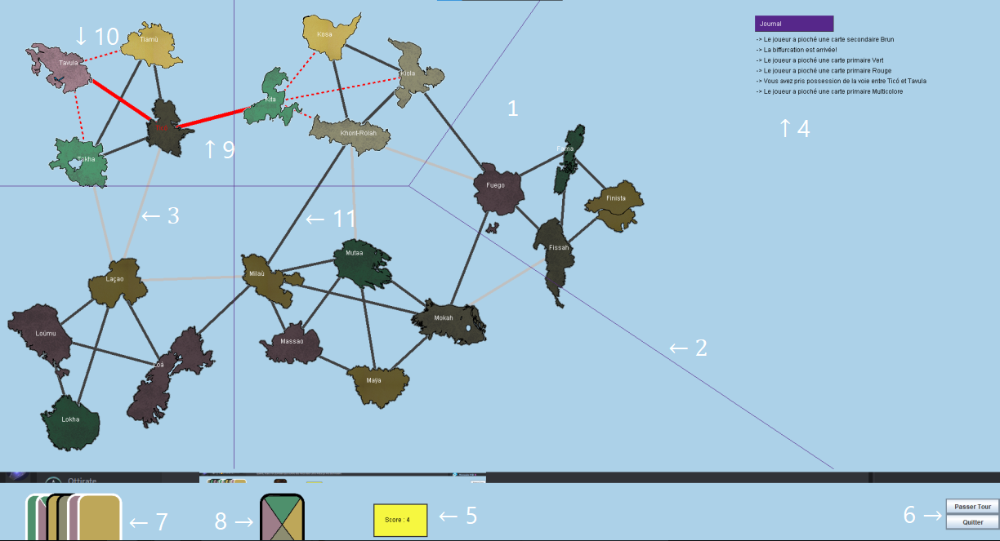
Schéma du jeu
Le plateau
Les délimitations des régions
Les voies maritimes aux points bonus
Le journal
Le résultat du score
Boutons permettant de passer son tour ou quitter le jeu
Le paquet
La carte actuelle
La voie maritime choisie par l'utilisateur
Les voies maritimes pouvant être jouées
Les voies maritimes qui ne sont pas encore jouées
Langage utilisé :
Java
← Précédent
Suivant →
1. : Appréhender les besoins du client et de l'utilisateur
Etape 1 :
Rencontre avec le client.
Etape 2 :
Élaboration d'un formulaire destiner à l'utilisateur à l'aide de Google Forms.
Etape 3 :
Création des personas suite aux réponses obtenues dans notre questionnaire à l'aide de Canvas.
Rencontre avec le client
Durant cette rencontre, nous avons posé différentes questions afin d'obtenir plus d'informations sur le besoin du client.
Suite à cela, nous avons créé une synthèse des éléments clés que nous avons pu obtenir comme ci-dessous :
Cible : personnel éducatif, accès à tous les IUT... ;
Forme : site web intuitif et écoresponsable, avec un rendu au choix... ;
Pratique et fonctionnalités : utilisation d'un fichier texte ou excel, la disponibilité des salles, pauses...;
Suppléments : logo, nom et connexion non obligatoire...
Élaboration dun formulaire
Afin de proposer une application qui répond aux besoins de l'utilisateur, nous avons créé un questionnaire à l'intention des utilisateurs.
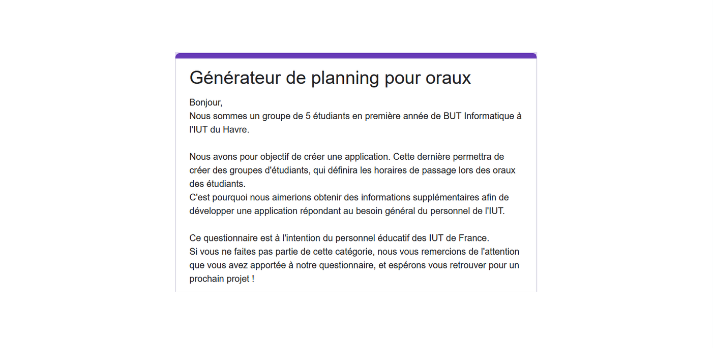
Présentation du projet
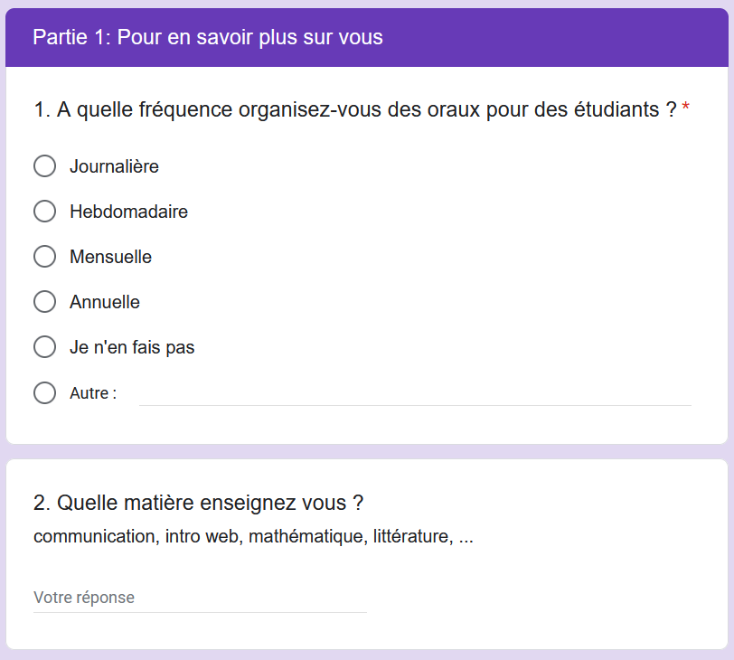
Questions générales
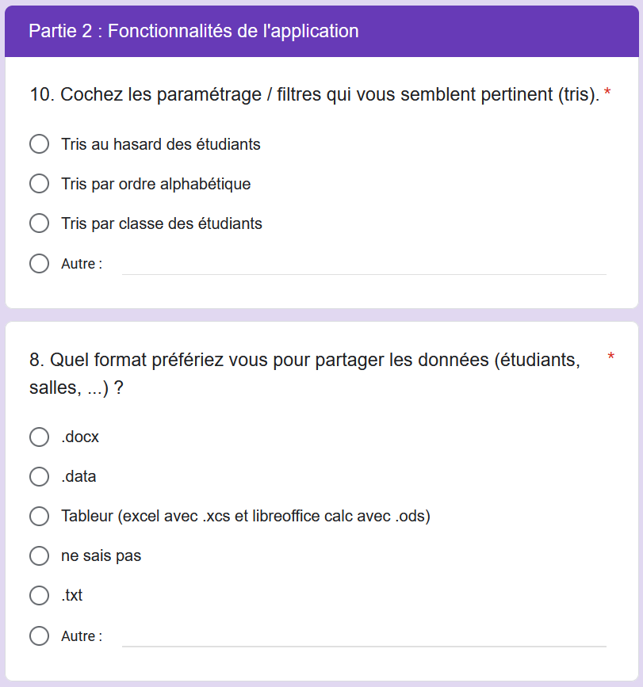
Questions des différentes fonctionnalités
Quelques réponses suite à notre questionnaire...
Questions des différentes fonctionnalités
Création des personas
Suite aux réponses que nous avons pu obtenir de la part des utilisateurs, nous avons pu créer deux personas.
Ainsi, à l'aide des personas, nous avons pu obtenir un utilisateur type.
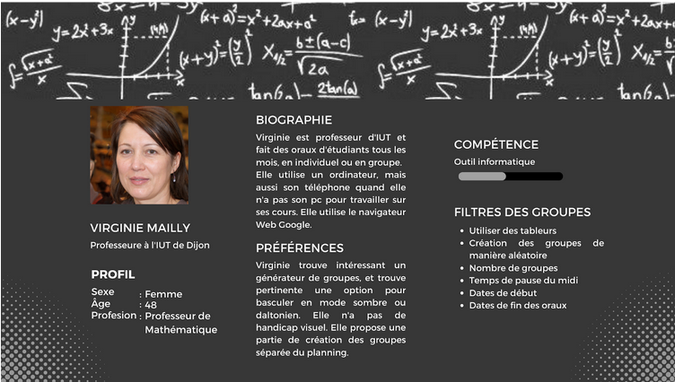
Premier persona
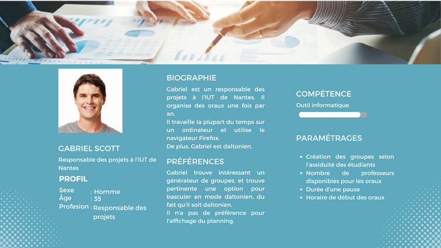
Deuxième persona
Création de la maquette
Lorsque nos personas ont été créé, nous avons pu créé notre maquette, en prenant au compte les informations que nous avions gardé pour nos personas.
Dans un premier temps, nous avons créé la maquette pour un ordinateur :
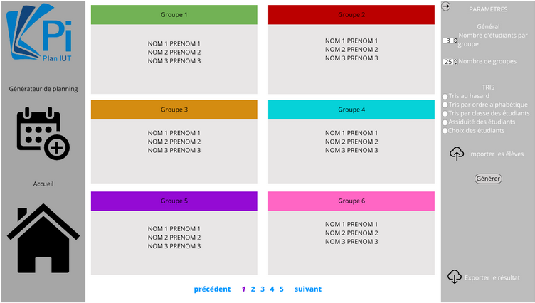
Générateur des groupes
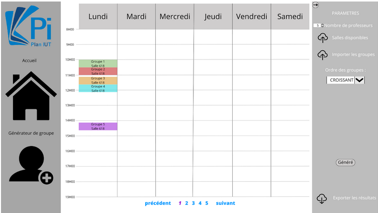
Affichage des horaires de passage des groupes
Puis, nous avons créé la maquette pour un téléphone portable :
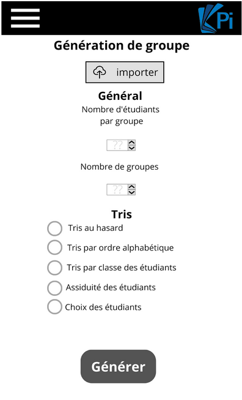
Générateur des groupes
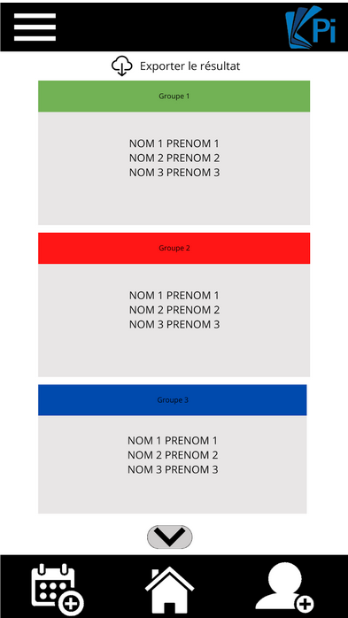
Affichage des différents groupes
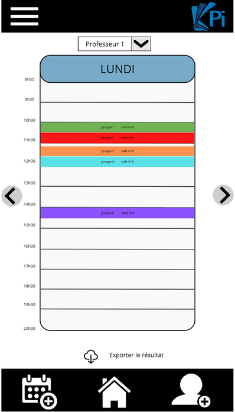
Affichage des horaires de passage des groupes
← Précédent
Suivant →
2. : Mettre en place les outils de gestion de projets
Afin de nous répartir les tâches, et pour faciliter notre travail et communicatinon, nous avons utilisé l'outil Trello. Concernant le partage de nos documents, nous avons utilisé Google Drive et Canvas.
Tout d'abord, Google Drive nous a permis de partagé nos différents fichiers.
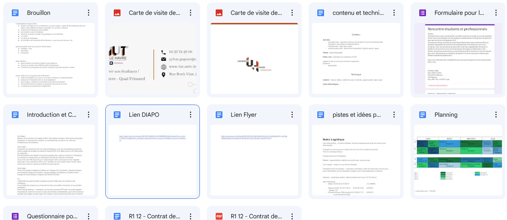
Utilisation de Google Drive
Puis, nous avons utilisé Canva pour créé nos flyers et notre diaporama.
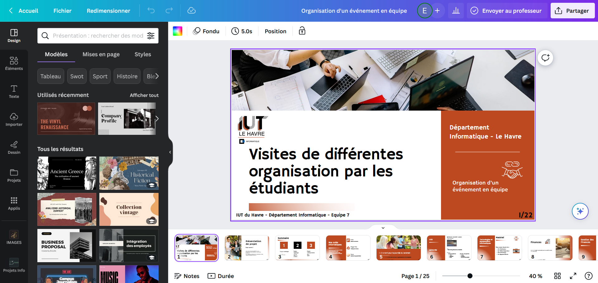
Utilisation de Canvas
Enfin, nous avons utilisé Trello, afin de savoir quelle tâche devait être faite à quel moment, et ainsi, mieux gérer notre temps.
← Précédent
Suivant →
3. : Identifier les acteurs et les différentes phases d'un cycle de développement
Les acteurs
Durant ce projet, nous nous sommes répartis le travail. Etant une équipe de 5 personnes, nous avons créé 2 petits groupes.
Le premier, consituer de deux membres, c'est occupé de la partie IHM, c'est à dire la partie métier. Ensuite, le deuxième, constitué d'un groupe de 3 personnes, s'est occupé de la partie métier.
Les phases
Nous avons répartis ce projet en 3 grandes phases :
La partie technique : les graphes
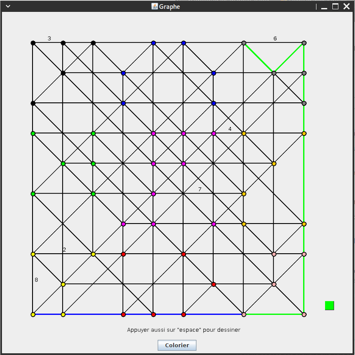
Image de l'IHM des graphes de la SAE 2.02
Développement du jeu selon le besoin client
Ajout des avenants
Vréation des scénarios dans le but de tester les différentes fonctionnalités